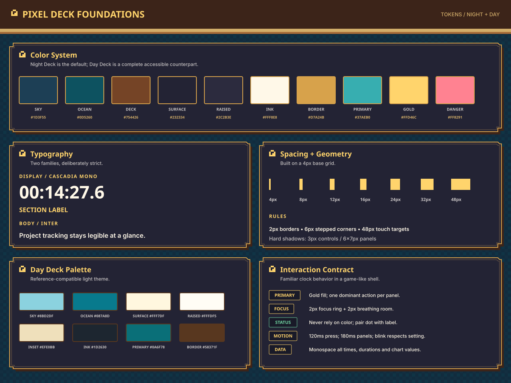
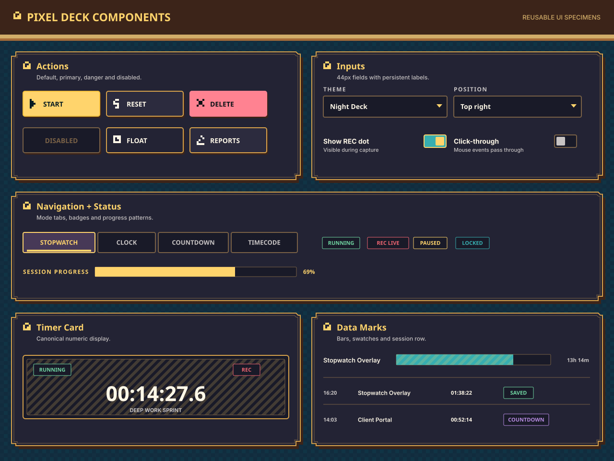
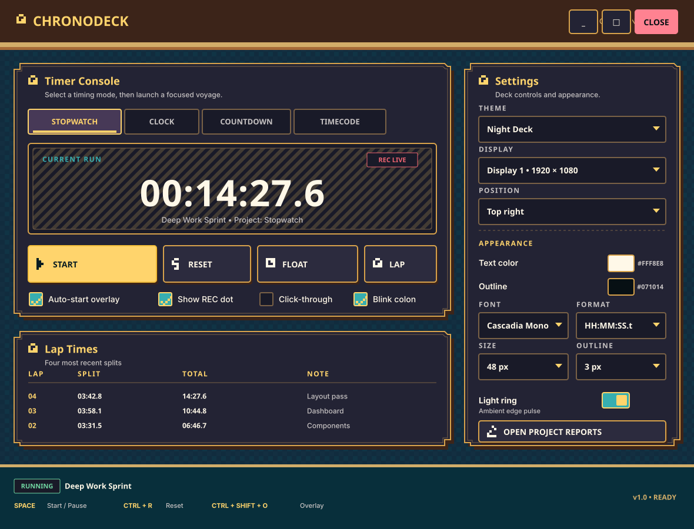
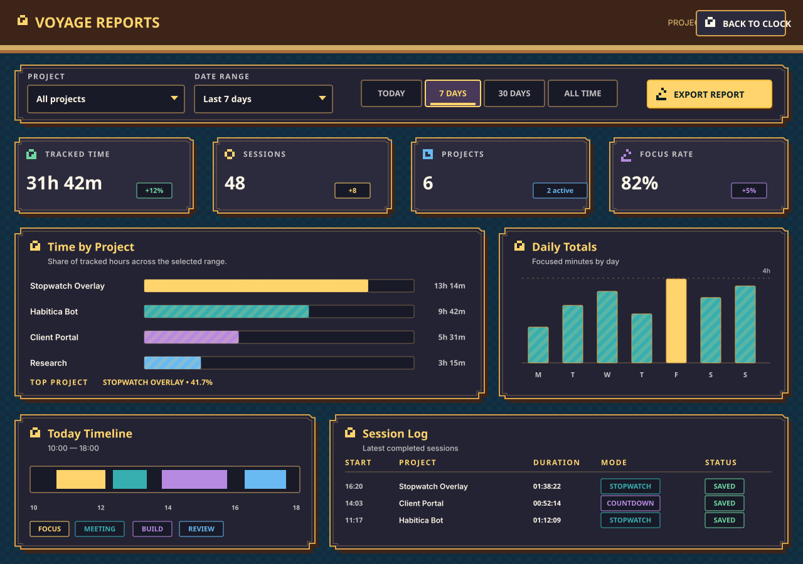
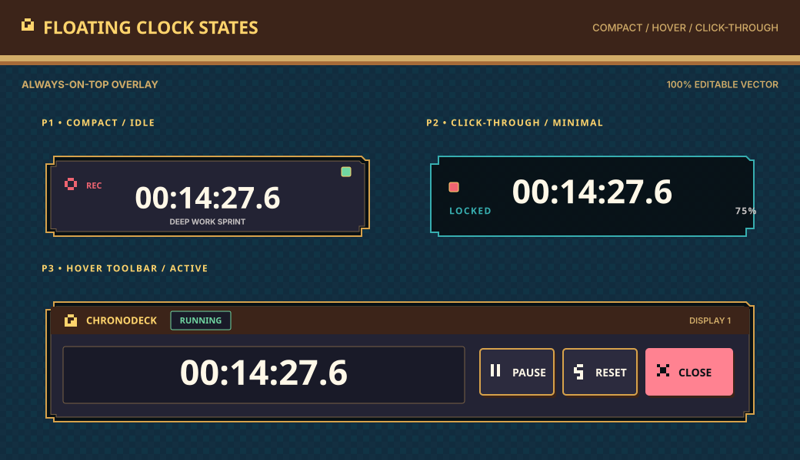

FOUNDATIONS 1280 × 960

COMPONENTS 1280 × 960

CONTROLLER + SETTINGS 1180 × 900

REPORTS DASHBOARD 1280 × 900

FLOATING CLOCK 1040 × 600

Editable Figma-ready vector boards · Night Deck default · Day Deck tokens included





Generated from generate-pixel-deck.mjs. Each SVG uses only native vector primitives and editable text.